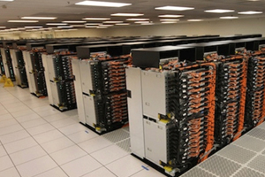
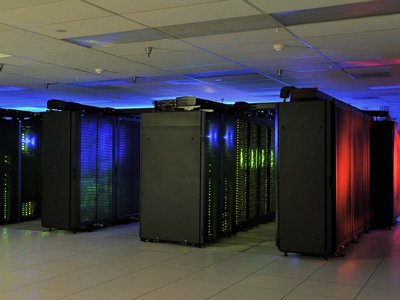

5.Generácia
Počítače piatej generácie sú to stroje s umelou inteligenciou a superpočítače. Významným krokom by mohol byť kvantový počítač.
Napriek neustálenému zmenšovaniu rozmerov a zvyšovaniu taktovacej frekvencie, existuje isté obmedzenie - rýchlosť svetla! (Svetlo prejde vo vákuu za 10-10 sekundy len 3 centimetre.) Preto zvyšovať výkonnosť je možné len paralelnými systémami - viacerými mikroprocesormi, ktoré si vedia úlohy "podeliť medzi seba". Čo je v skutočnosti z realizovateľné.
V súčastnosti najvýkonnejší počítač sa svete:
Sequoia – BlueGene/Q, Power BQC 16C 1.60GHz s pamäťou 1572864 GB od IBM

